Хижаки Полісся
 ВОВК
ВОВК
Видове багатство хребетних хижаків Полісся одне з самих високих у рівнинних лісах Центральної і Середньої Європи. Поліський природний заповідник проводить велику роботу з охорони хижих тварин, насамперед це стосується видів занесених до Червоної книги України - рисі, видри, європейської норки, горностая, борсука. Також на території заповідника гніздиться відносно велика кількість рідкісних хижих птахів, серед них такі "червонокнижні" види як беркут, скопа, лунь польовий, змієїд, підорлик великий, сапсан, пугач, сич волохатий, сичик-горобець, сова бородата. Головний хижак Полісся - вовк, занесений до Європейського Червоного Списку, але в Україні винищується.
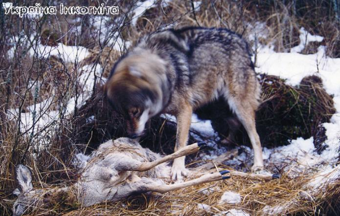
У Західній Європі вовк знаходиться на межі зникнення і занесений до Європейського Червоного Списку. Фізичне винищення вовків, розбиття на дрібні частини ареалів їхнього проживання транспортними мережами, вирубка лісів та інші фактори антропогенного впливу спричинили значне зменшення кількості вовків. В Україні вовк вважається звичайним видом. Його не охороняють, а, навпаки, винищують
"Тихо і зненацька на село впала ніч. Стало темно і незатишно. Нечисленні працівники лісопилки розійшлися по домівках. Пішов додому і Мишко. Неподалік від власної хати він почув дивний галас і гарчання. Від побаченого в дворі у хлопця "мурашки" побігли шкірою - біля клуні, причавивши до снігу молодшу Мишкову сестру, стояв величезний вовк. З сіней виглядала ще одна сестра і щодуху кликала на допомогу. Мишко, недовго думаючи, виломив штахетину і кинувся на вовка...
Рушниця в селі була лише у голови сільради, якого старенька мати щоночі ховала від "бандеровців" на горищі. Закривавлений Мишко вскочив у двір голови. "Порятуйте! Вовки!" - кричав він гупаючи у двері. Але недовірлива баба, підозрюючи, що за дверима оунівці, з острахом відповідали: "Йдіть відси! Сина нема вдома". Відчуваючи за спиною важкий вовчий подих і гарчання Мишко повернувся. Вовк, потужним стрибком, збив його з ніг. Невідомо яким чином, але хлопцю вдалося запхнути кулака вовку у пащу...
Мишка врятувало те, що вовк був старий і беззубий, саме тому він і не впорався ні з хлопцем, ні з його сестрами. Голова сільради повідомив "куди треба". Через кілька днів приїхав спецзагін, влаштував облаву і знищив людожерів, а разом з ними силу-силенну інших вовків.
Мишка і його сестер відвезли у військовий госпіталь - вовк добряче порвав їх. Рани, що наніс хижак згодом загоїлись, але залишилась психологічна травма - щоночі хлопцеві снились вовки. Медична комісія визнала хлопця психічно хворим. Його не взяли до лав армії, давали виконувати найпростішу роботу. Років через десять мати відвезла Мишка до ворожки. "Це були вовкулаки"- казала ворожка, після того як вилікувала Мишка".То було 1947 року. Вовки-людожери, що невідомо звідки взялися, тримали у страху населення усього Житомирського Полісся. Ще й досі ходять легенди про тих вовків та про неймовірну кількість людей, що загинули від їх зубів. Кажуть що то були якісь перевертні. Ще й досі живий Мишко - зараз це поважний дідусь, який часто оповідає онукам казки про чудовиськ-вовків.
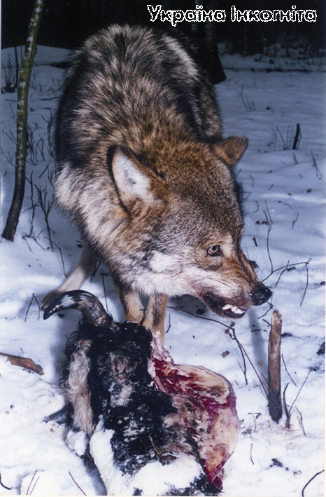
Існує анекдот про голову колгоспу, який, з бригадою мисливців, засів на вовків біля ферми, на якій минулої ночі вовки задушили корову і двох теличок, а ті, в той самий час загризли п'ятьох корів на сусідній фермі цього ж колгоспу. Вовк дійсно становить небезпеку для домашньої худоби. На Поліссі від вовчих зубів щорічно гинуть десятки голів худоби. Але слід подумати чи душив би вовк худобу, якщо було б у нього достатньо поживи у лісі.
Давно минули ті часи коли вовки становили значну небезпеку для людини. За останні кілька десятків років у Поліссі не зареєстровано жодного випадку загибелі людини від вовка.
Вовк - це велика хижа тварина з родини собачих. Маса вовків може досягати 70-80 кг, але зазвичай дорослі самці важать 40-50 кг (самки дрібніші). Великі ікла та потужні щелепи дозволяють вовку вбивати навіть таких великих тварин, як дорослий лось або кінь. Сильні ноги переносять його на багато десятків кілометрів. Можливості вовка як мисливця дуже великі. Слід зазначити, що довгий час ця тварина може обходитись взагалі без їжі.
Основою раціону вовка є крупні і середнього розміру ссавці, а також птахи. Майже повсюдно він пов'язаний з копитними. Від їх видового складу, чисельності, а також від характеру використання території залежить спосіб життя вовка. Місця щеніння найбільш часто приурочені до ділянок, де навесні та початку літа концентруються копитні. На Поліссі вовки віддають перевагу заболоченим низовинам річкових заплав, де охоче тримаються лосі, олені, кабани.
Набір кормів цього хижака складається з різноманітних ссавців, аж до мишей і полівок, та дрібних птахів. Вовки можуть їсти ягоди, особливо за гарного врожаю, відомі випадки коли вони їли комах (наприклад, сарану), причому не від голоду, а з великим задоволенням. Все це свідчить про пристосованість вовка.
В ряді випадків вовки наносять дуже великі збитки стадам домашньої худоби, саме тому у нас в країні оголошено війну цьому хижаку (заповідників це не стосується).
Первісними стаціями вовка були відкриті простори степів і лісостепів, де раніше блукали стада копитних. Але згодом ці хижаки перекочували до лісової зони, і причиною цього стали люди. Саме вони суттєво зменшили кількість копитних у степах, чим знищили кормову базу для вовка.
В лісовій зоні вовк майже завжди тісно пов'язаний з людиною. Будучи не-пристосованим до тривалого пересування пухким і глибоким снігом, він у багатосніжні зими може користуватись дорогами, стежками, лижнями. Крім того людина може частково забезпечувати хижака їжею, причому він використовує як невміле випасання, погано зачинені хліви та ферми, так і скотомогильники.
В освоєних районах лісової зони вовк став супутником людини, що зробило його особливо небезпечною твариною, яка і в наш час продовжує завдавати шкоду господарству. Крім того, він небезпечний у якості переносника паразитичних червів домашньої худоби та, особливо, як переносник сказу.
Рішення проблеми загрози вовків домашній худобі дехто вбачає виключно у повному винищенні цього хижака. Але чи має право людина присудити вовку абсолютне зникнення, якщо вона сама в значній мірі винна в тому, що природні ландшафти перестали забезпечувати його харчовими ресурсами і він знайшов собі нове джерело їжі - домашню худобу? Ніхто з противників існування вовка не може з упевненістю сказати, що після його зникнення, не вимруть від численних епізоотій (епідемій) тварини, на яких він полює у природі. На захист цього хижака як виду говорить його роль санітара. В природі він бере майже виключно хворих і покалічених тварин тим самим очищуючи популяцію.
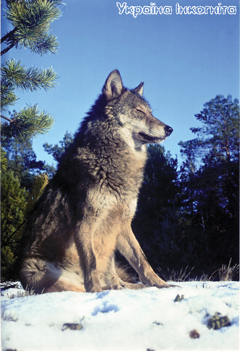
В Західній і Центральній Європі вовк вже практично зник. Західною межею поширення життєздатної популяції вовка зараз є Карпатські гори. В Україні поступово зростає розуміння того, що слід шукати рішення проблеми, яке б одночасно дозволяло вовку вижити і враховувало економічні інтереси людини. Безперечно чисельність вовків потрібно регулювати, але також потрібно забезпечити цього хижака природним живленням у формі достатньо великих популяцій диких копитних.
Найбільш цікаві і характерні особливості вовка - це життя в зграї і виття. Зграя являє собою родинну групу, яка складається із різновікових тварин, що разом використовують певну територію. Зазвичай зграя складається з батьків, прибулих (цьогорічного виводку) та переярків (тварин що не досягли статевої зрілості). Дуже часто в неї входять кілька тварин, які, скоріш за все, не приймають участі у розмноженні. На Поліссі середня кількість вовків у зграї 5-7 особин, хоча раніше зграї були набагато чисельніші й могли становити значну небезпеку для людей. В Росії і зараз часто трапляються зграї чисельнісю 11-22 особини. Найбільш компактними групами тримаються вовки узимку, більш роззосереджено - влітку. Зграя розпадається пізньої весни, коли дорослі самець і самка відокремлюються від неї, щоб вивести й виростити вовченят. Зазвичай в родині вовків 5-6 щенят. Траплялись випадки, коли їх народжувалося 10-13 і навіть 17. Але такі випадки рідкісні і половина виводку в багаточисельних родинах не виживає. Вовченята народжуються сліпими і безпорадними. Очі у них відкриваються на 9-12 день. Наприкінці другого тижня малеча починає реагувати на звуки, а через три тижні вперше виходить з гнізда. В цей же час вони починають куштувати м'ясо.
В перші дні вовчиця постійно знаходиться із щенятами. Її годує вовк. Він у шлунку приносить іжу і відригує її самці. Поступово вовчиця залишає щенят самих, часто надовго відлучаючись в пошуках корму. Відсутня самка може бути від 6 годин до трьох діб. Тривалість відсутності самки сильно залежить від достатку їжі в околицях лігва. Зазвичай, коли самка полишає лігво, вовченята лишаються самі і збираються докупи щоб зігрітись. Вовк рідко відвідує лігво. Але якщо вовченята підповзають до батька, він не відганяє їх, зігріваючи теплом свого тіла.
Члени зграї, які не приймають участі в розмноженні, навесні і влітку не полишають родинної території, залишаються, не утворюючи великих скупчень. Основну перевагу зграйного способу життя вовків зоологи пов'язують з полюванням на крупних копитних тварин.
Розмір родинної території сильно залежить від ландшафту і коливається в дуже широких межах. В лісовій зоні родинні ділянки вовків мають площу менше 200 км2.
Вовки мітять свою територію сечою, фекаліями або ж залишаючи подряпини на стежках, повалених деревах, окремо стоячих пнях. Послід вовків, підсихаючи, набуває білого кольору й на відкритому місці помітний з далекої відстані.
Більшість зоологів вважають, що вовки моногамні. В родині є один самець, який протягом багатьох років утворює супружню пару з однією й тою ж самкою. Але важко ствержувати, що це саме так, тому що в зграї часто присутні декілька статевозрілих самців і самок. В такій зграї можливі або віддання переваги шлюбним партнерам, або примусова моногамія, зумовлена внутрішньостатевою агресією, що перешкоджує участі в розмноженні потенційних суперників. Останнє більш вірогідно, адже в зграї існують ієрархічні взаємовідносини. В складній родині вовків дві лінії домінування: окремо самців і самок, коли одні самці домінують над іншими самцями та одні самки домінують над іншими самками. Дорослі тварини не нападають на щенят, які таким чином, виявляються поза ієрархією.
Спостерігати окремі деталі внутрішнього життя зграї в природних умовах дуже важко, практично неможливо. Тому ту невелику кількість інформації, що відома про складну ієрархію в родині вовків, отримано завдяки спостереженням за тваринами, яких утримували в неволі.
Зграя вовків складається з а-самця, а-самки, b-самця, низькорангових вовків різної статі та вовченят, які знаходяться поза ієрархією. В час шлюбного періоду і перед ним а-самка дуже агресивно ставиться до усіх статевозрілих самок. Вона хоч і віддає перевагу а-самцю, але може спаровуватися і з іншими статевозрілими самцями, у тому числі і низькоранговими. Але найбільшу кількість контактів вона підтримує все-таки з а-самцем. Після гону її агресивність різко знижується, і вона дружньо поводить себе по відношенню до усіх членів зграї, що сприяє становленню гарного, для вирощування щенят, клімату в родині. А-самець є справжнім лідером зграї - він дружньо ставиться до усіх її членів, але виключно агресивно зустрічає чужаків. Навколо нього згуртована майже вся активність зграї, йому ж належить лідерство в маркувальній поведінці. B-самець - найбільш вірогідний приємник а-самця. Зазвичай це син або брат а-самця або а-самки, або обох відразу. Таким чином, він тісно пов'язаний родинними узами і з вовченятами, адже є їх дядьком або старшим братом. В-самець демонструє високу агресивність до низькорангових членів, але інколи вона адресована і вищеранговим. В-самець, демонструючи агресію до а-самця, періодично перевіряє статус останнього, адже є його приємником в ієрархії і постійно готовий зайняти його місце.
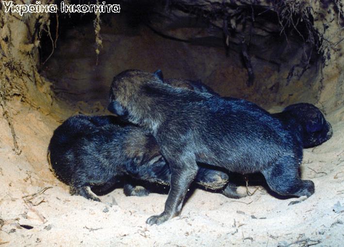
В родині вовків народжується 5-6 щенят. Для них дорослі вовки в роблять лігво. Найчастіше це неглибока яма, без якої-небудь підстилки та бокових ходів, вирита у пухкому піщаному грунті, часто між кореневищами дерев. Цікава особливість вовків, те, щовони ніколи не захищають своє потомство від людини: з лігва вовченят може забрати навіть дитина.
Роль низькорангових самців визначається насамперед перевагами, які отримує зграя від колективного полювання на крупних копитних, що можуть переважати за розмірами самих хижаків. Шанси низькорангових самців залишити потомство дуже обмежені. Вони вимушені довгий час чекати своєї черги в ієрархічній цілі лідерства. Разом з тим такі тварини є найбільш вірогідними претендентами на лідерство за умови виходу в нову зграю. На відміну від а-самця, вони терпимо відносяться до чужинців, легко вступаючи в контакти з ними. Становище низькорангових самок подібне до становища низькорангових самців, але вони більш залежні, менше схильні лишати зграю і відчувають на собі сильний прес з боку а-самки. Лише влітку вони можуть дещо пом'якшити її тиск, допомагаючи вирощувати щенят.
Вовченята демонструють підлегле становище до усіх членів зграї.
Агресивність відіграє помітну роль у підтримуванні структури зграї, в ієрархічних відносинах між її членами, тривалому, практично перманентному її існуванні. Але не менше, а можливо навіть більше значення мають позитивні внутрішньозграйні тенденції у поведінці вовка. Завдяки взаємній терпимості можливе об'єднання зграї під час групових полювань, які супроводжуються тонкою координацією дій її членів.
В родині вовків народжується 5-6 щенят. Для них дорослі вовки в роблять лігво. Найчастіше це неглибока яма, без якої-небудь підстилки та бокових ходів, вирита у пухкому піщаному грунті, часто між кореневищами дерев. Цікава особливість вовків, те, щовони ніколи не захищають своє потомство від людини: з лігва вовченят може забрати навіть дитина.
Дуже цікавою особливістю життя вовків є виття - найбільш виразний звуковий сигнал, що є широко відомим і одночасно дуже загадковим. Найбільш загальна функція виття - підтримувати в зграї мотивацію консолідації, прагнення до об'єднання. У описах поведінки, що супроводжує спонтанне групове виття, коли тварини починають вити, здавалося б, без помітної причини, усі, хто спостерігав вовків, одностайно підкреслюють дружній характер взаємодії між тваринами безпосередньо до і під час цієї акустичної демонстрації.
В природних умовах вовки виють зазвичай в пізні вечірні години, рідше вночі і вранці.
Останнім часом в заповіднику все частіше чутно виття вовків, особливо взимку. Населення сіл і хуторів, (в деяких хуторах навіть немає електроенергії) що оточують заповідник, часто жаліється на сваволю цих хижаків: то козу загризли, то собаку задушили. Навіть собаки, які живуть в дворі адміністрації резервату, вчувши вовків втікають у село Але директор заповідника Жила Сергій Миколайович, пристрасний дослідник вовків, постійно стає на захист цих тварин, забороняючи їх відстріл.
РИСЬРись - дуже сильна і спритна тварина. Вона прекрасно лазить по деревах і скелях, дуже швидко бігає, може стрибати на 3,5-4 метри, добре плаває. Цей хижак є дуже гарним мисливцем. Вдень він, як правило, відлежується у лігві, а із заходом сонця виходить на полювання. Полює рись із засідки. Годинами, інколи добами, може сидіти вона у зручному місці чекаючи на свою жертву. Слух та зір у цієї кішки дуже гострі: мишу вона може розпізнати з 75 метрів, а зайця - з 350 метрів. Подолати рись може тварину, значно більшу за себе розмірами: молодого лося, оленя, кабана, хоча основне її харчування - це козулі, зайці, птахи, гризуни. При можливості ловить білок, куниць, соболів, єнотоподібних собак. Лисиця разом з круком, надзвичайно швидко утилізують залишки здобичі рисі, змушуючи її більш інтенсивно полювати. Ця обставина викликає спеціальне переслідування риссю лисиць - їх рись знищує жорстоко і рішуче. Районів, добре обжитих вовками, ця велика кішка намагається уникати - вовк для рисі такий самий ворог, як рись для лисиці.
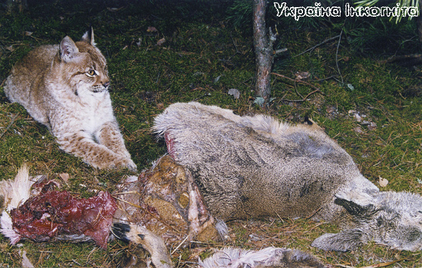
Свою здобич рись скрадає і підстерігає, стрибаючи з-за укриття. Найбільш бажаним об'єктом полювання рисі є козуля, хоча ловить вона і зайців, і птахів, в тому числі глухарів. Зазвичай рись не може з'їсти впольовану здобич відразу, тому переховує її в спеціальні схованки: найчастіше це купи трави та хмизу, часто залишки здобичі рись зариває у сніг.
Рись - дуже скритна і обережна тварина, побачити її на волі дуже важко. Проживання цього хижака лімітується наявністю глухих лісових місцевостей та кількістю харчових ресурсів. В Україні рись знаходиться на грані зникнення. Єдине місце, де вона відносно гарно себе почуває - це ліси Карпатських гір. Полісся - другий регіон після Карпат, де в Україні ще існує популяція рисі.
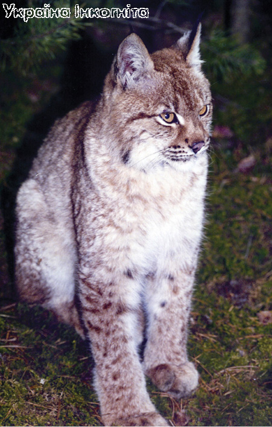
Поліський заповідник в справі практичної охорони рисі і створенні сприятливих умов для її розмноження досяг в останні роки гарних результатів. Так в резерваті після 1983 року даний вид впродовж довгого часу взагалі не розмножувався. В цей час тут реєструвались лише заходи окремих особин, переважно молодих, котрі розселялись. Нарешті в 1998 році в районі заповідника дуже часто почали зустрічатися сліди дорослого самця рисі. Наступного, 1999 року, самка успішно виростила двох рисенят. В 2000 році в резерваті розмножувались вже дві самки, а загальна чисельність виду тут склала 6 особин, в 2003 році в заповіднику і на прилеглій до нього з півночі та сходу території мешкало 4 виводки цієї рідкісної тварини.
ІНШІ ХИЖІ ССАВЦІКуниця є звичайним видом хижих ссавців у Поліському заповіднику. Розміром вона трохи більше за домашню кішку. Має довгий тулуб, короткі чіпкі лапи, пухнастий хвіст, загострений писок і широко розставлені вуха. Шерсть бурого кольору, підшерсток палевий. Іменем куниці названо велику родину близьких і дальніх родичів з ряду хижаків.
Куниця дуже гнучка і спритна, їй доступна будь-яка ділянка лісу. Полює куниця на полівок і білок, сонь і зайців, рябчиків і синиць, може вполювати навіть такого великого птаха як глухар. Із задоволенням ласує горіхами, медом, ягодами чорниці, горобини, шипшини. Не відмовляється від великих комах, жаб, ящірок, яєць різних тварин.
Також дуже чисельним в заповіднику хижаком є лисиця, причому в останні роки її кількість збільшується. На думку багатьох дослідників це дуже негативне явище з багатьох причин, і перш за все через те, що лисиця у великій мірі скорочує кормові ресурси хижих ссавців і крім того, вона ускладнює епізоотичну обстановку в угіддях, адже вона є переносником цілого ряду хвороб, в тому числі сказу. Крім того лисиці часто переслідують і знищують інших дрібних видів хижаків.
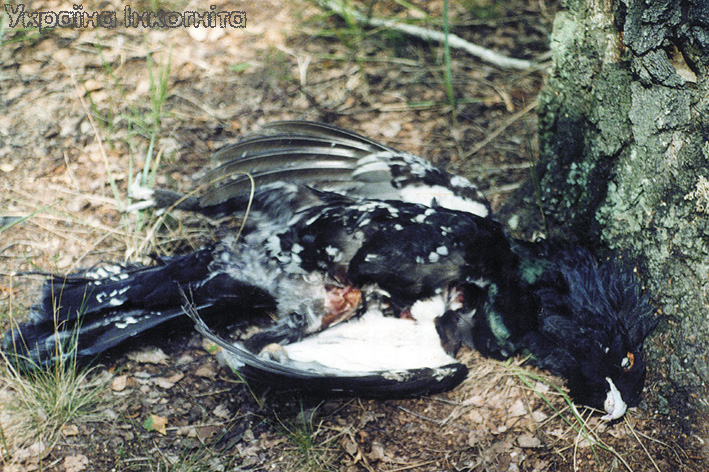
Самець глухаря убитий куницею
Є в заповіднику такі рідкісні в країні види хижаків як борсук, європейська норка, видра, горностай. Перспектив для збереження європейської норки в Україні майже не залишилось, її повсюдно витіснює акліматизована американська норка. Ареал видри обмежується кількістю незарегульованих річок (зимова непридатність). Існує помірний прес полювання на цю тварину.
Чисельність горностая, невеликого за розміром хижака з родини кунячих, в Україні в останні десятиліття постійно скорочується. В минулому хутро цієї тварини дуже цінувалось. Горностай сильно відчуває на собі вплив людини, який постійно зростає. В заповіднику горностай є звичайним, хоча і нечисельним видом, щільність якого постійно скорочується.
Також в межах резервату мешкають інші види хижих ссавців: тхір чорний, єнотоподібний собака, ласка, кажани.
ХИЖІ ПТАХИБородата сова є однією з найбільших представників своєї родини. Загальна довжина її тіла досягає 80 см, а розмах крил 150 см. Вага дорослого самця 700-800 г, самки - трохи більше кілограма.
Основне забарвлення цієї сови темно-сіре з великою кількістю темних смужок. Хвіст довгий, має клиноподібну форму. Пір'я лицевого диску розташоване таким чином, що допомагає передавати прямі звуки у напрямку вушних отворів, схованих під пір'ям. Очі здаються маленькими і мають жовтий колір. Відмінною особливістю бородатої сови є темно забарвлений клин пір'я під дзьобом - "борода".
Харчується бородата сова дрібними мишеподібними гризунами (80-90 % раціону), а також птахами, жабами, жуками. Полює рано-вранці або ввечері - особливо взимку, але може виходити на полювання і вдень. Полює із засідки, яку зазвичай влаштовує на дереві, з якого зручно спостерігати за галявиною, або іншим відкритим місцем, часто очікує на здобич біля дороги.
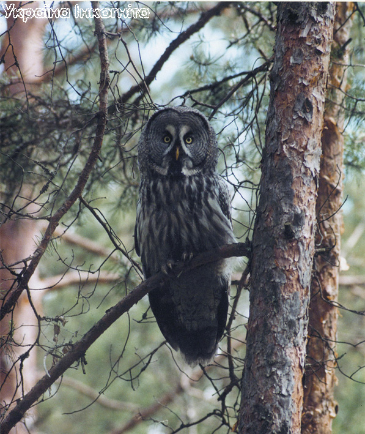
Бородата сова є однією з найбільших представників своєї родини. Загальна довжина її тіла досягає 80 см, а розмах крил 150 см. Вага дорослого самця 700-800 г, самки - трохи більше кілограма.
Сова має прекрасний зір та слух, що дозволяє їй полювати, як вдень, так і вночі. За допомогою чуткого слуху вона встановлює місцезнаходження дичини, навіть якщо вона знаходиться на 30 сантиметрів під снігом або під землею. Визначивши місце, сова злітає з гілки, сідає на сніг і хапає гризуна.
Бородата сова є важливою ланкою в харчовому ланцюгу, адже регулює чисельність гризунів. Літає вона близько до землі, зазвичай на відстані 6 метрів від поверхні, за виключенням тих випадків, коли вона прямує до гнізда. Погано переносить спеку.
Заклик самця бородатої сови низький, але потужний: "гуу-гу-гу", самка у відповідь інколи протяжно гуде "гуууу".
До розмноження бородата сова приступає наприкінці зими. Гніздиться на деревах, в старих гніздах хижих птахів, особливо канюка. Інколи птах може класти гніздо в дуплі або на землі між корінням дерев. Гніздо зазвичай розташоване в лісі, неподалік від галявини (на відстані не менше 1,3 км).
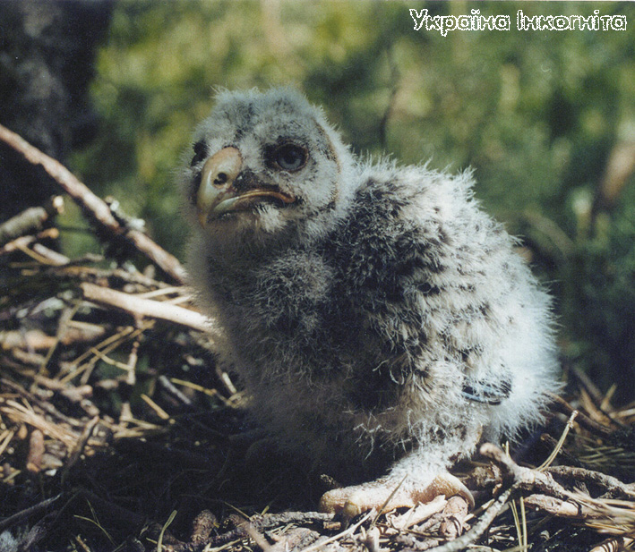
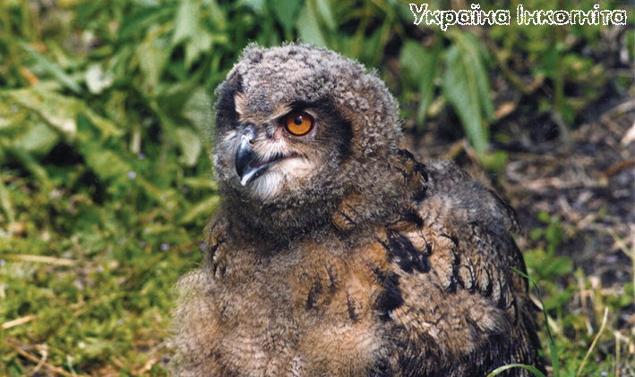
Самка бородатої сови відкладає від 2 до 6 білих яєць з яких через 28-30 діб вилуплюються пташенята. Совенята з'являються на світ з відкритими очима. Вони вкриті білим пухом та мають темний лицевий диск. Ростуть совенята швидко і вже на 30 день починають залишати гніздо.
Яйця самка сови відкладає у березні-квітні і висиджує їх 28-30 днів. Весь цей час самець приносить їй їжу. Біля гнізда бородата сова веде себе напрочуд агресивно: кидається на людину, б'є грудьми в голову і намагається схопити кігтями. Совенята народжуються білими з відкритими очима. Їх годують обоє батьків, розриваючи здобич на дрібні шматки. На 30 день пташенята вже добре лазять і виходять з гнізда, ще через 2 тижні вони вже можуть літати.
Бородата сова - рідкісний птах, занесений в Червону книгу України, хоча в Поліському заповіднику останніми роками чисельність її зростає. Подібні тенденції очевидно характерні для всього Полісся.
У цих птахів відсутнє почуття страху перед людиною, і сова часто потрапляє під браконьєрські постріли. Вид не потребує спеціальних мір охорони, за винятком проведення інформаційно-пропагандистської роботи серед населення та вивчення поширення виду в Україні.
Беркут в Україні, як і у всій Європі, знаходиться на грані зникнення і занесений до Червоної книги. У відносній безпеці популяція беркута знаходиться лише в Карпатах (там їх живе близько 20 пар). Головна причина малої кількості цих птахів - переслідування людиною. Серед населення довгий час була поширеною думка, що орел є небезпечним для домашньої худоби і, навіть, для людини. Орлів винищували, їхні гнізда спустошували. Часто птахів відловлювали (роблять це і зараз) для використання на ловах.
В Поліському заповіднику беркут зустрічається щорічно, особливо взимку. В околицях заповідника ці птахи кілька раз потрапляли у браконьєрські самолови, тому для збереження необхідно проводити роз'яснювальну роботу серед місцевого населення і заборонити насторожування поблизу м'ясної приманки самоловів (петель і капканів).
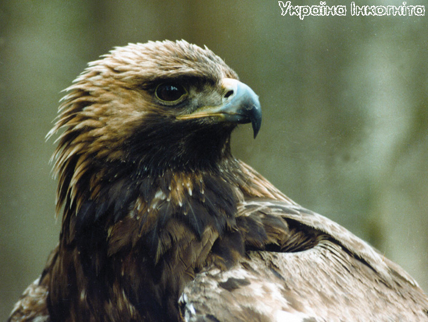
Назва цього величного птаха, який таксономічно вважається типовим орлом, має тюркське походження (буркут, бюркут) і широко поширена в країнах Середньої Азії, де його часто використовують як ловчого. Ще одна назва беркута - халзан, але нею орнітологи користуються значно рідше. В Україні беркут є одним з найбільших крилатих хижаків.
Беркут - великий птах який має висоту 85-90 см і важить 3-6,5 кг. Має довгі (розмах до 2,2 м) та відносно вузькі крила. Самки помітно крупніші за самців. Забарвлення одноманітне темно-буре, хоча молоді птахи мають на крилах світлі елементи, та білого, з широкою темною смугою на кінці, хвоста.
Поширення беркута у значній мірі визначається тим, що для його гніздування потрібна певна сукупність гніздових і кормових умов: наявність скал або дерев, придатних для влаштування гнізд, а також відкритих або розріджених лісових просторів, придатних для полювання.
В харчуванні беркута переважають хребетні тварини. Здобиччю стають ссавці - від молодих оленів та вовків до зайців, птахи - від глухарів та чапель до дроздів і сорок.
Крупних тварин беркут завжди намагається вхопити однією лапою за спину, а іншою - за голову, і, зводячи лапи докупи, ламає їм хребта. Якщо це не вдається, то він дзьобом розриває тварині шию і та гине від втрати крові. Ще один спосіб полювання - кидок з висоти, при цьому беркут і потенційна жертва котяться шкереберть, але пернатий хижак не розчіплює пазурів.
В якості будівельного матеріалу для гнізда орли використовують міцні гілки, тому гніздо може зберігатись довгі роки. Воно може мати в діаметрі до 2-3 метрів, та товщину до 2 метрів. Для влаштування лотка беркути можуть використовувати шерсть, пір'я, а також зелене листя рослин.
У квітні самка беркута відкладає 1-2 яйця біло-кремового кольору. Насиджування триває 40-45 днів. Перші 30 днів після вилуплення орлята вкриті білим пухом. Протягом наступного місяця їх тіло поступово вкривається пір'ям. Молоді птахи набувають здатності літати вже в 75-80 денному віці, але перебувають під опікою батьків протягом року до наступного періоду розмноження.
Яструб-тетерев'ятник - хижий птах, що належить до родини яструбових. Довжина його тіла 48-68 см, розмах крил 96-127 см, самці важать 520-1200 г, самки - 800-2000 г. Короткі зігнуті крила дозволяють йому за короткий проміжок часу досягати високої швидкості. Склавши крила яструб кулею пробиває крони дерев і підлісок зі швидкістю до 56 км за годину. Полює він на птахів, причому дуже різноманітних: його жертвою може стати будь-хто від горобця до глухаря та гуски. Інколи тетерев'ятник ловить білок, зайців, нападає на домашню птицю.
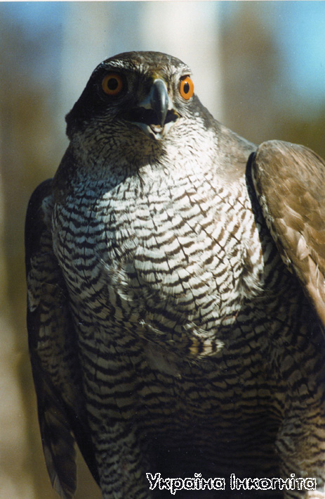
Яструб-тетерев'ятник. Цей птах є одним з найбільших у родині яструбиних. В Поліському заповіднику він є звичайним та багаточисельним видом
Своїх жертв яструб хапає, раптово вилітаючи із засідки. Може ловити здобич, що летить, але завжди намагається притиснути її до землі, а вже потім зручно вхопити.
Яструб-тетерев'ятник має високий і дзвінкий голос, схожий на клекіт: в шлюбний період його крик звучить як "кійяяя".
Зустріти цього птаха можна у лісових районах, хоча в зимовий період тетерев'ятники інколи тримаються біля населених пунктів. Гніздяться вони ще при сніговому покриві, часто займають гнізда інших птахів.
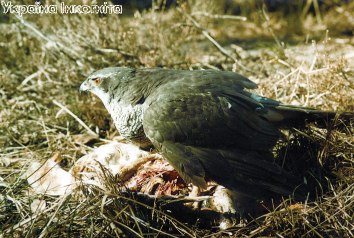
Яструб-тетерев'ятник зі здобиччю
Популярні тетерев'ятники, особливо великі самки, у якості ловчих птахів. В Поліському заповіднику цей хижак є звичайним видом і не потребує особливих заходів охорони.
В резерваті, крім беркута і бородатої сови, з крилатих хижаків, занесених до Червоної книги України горобець (найменший вид сов), волохатий сич, пугач, скопа, змієїд, сірий сорокопуд, польовий лунь, сапсан та великий підорлик. Життя польового луня та сірого сорокопуда пов'язане з сільськогосподарськими роботами на осушених болотах, які не входять в межі заповідника.
Серед пернатих хижаків заповідника зустрічаються: канюк, якого тут досить велика кількість, а також сплюшка, хатній сич, сіра, болотна та вухата сови, чорний шуліка, болотний лунь, яструб-перепелятник, кібчик, осоїд, боривітер звичайний.
Текст Сергія Жили та Романа Маленкова. Фото Сергія Жили